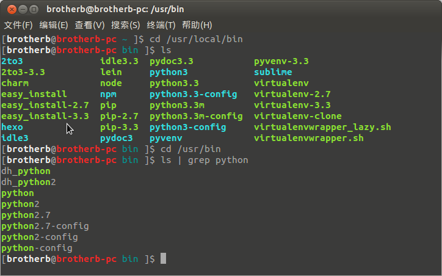

我的python环境配置
我使用ubuntu12.04,系统自带的python版本是2.7.3。在/usr/bin目录下面。不要动它，如果2.7.3可以满足需要，就看下面的一般配置就足够了。
一般配置
- 安装setuptools
- 安装pip
- 安装virtualenvwrapper(用pip，pip会自动安装目标包的依赖包如virtualenv等)
- 配置好virtualenvwrapper(见官方文档),并创建一个隔离的python环境(以后一般的工作都在这个环境中进行，假定这个环境的名字是dev)。
- 进入dev。
- sudo apt-get install Python-dev(下一步中安装pyzmq需要这一步)
- 安装ipython, pyzmq, jinja2, tornado(这一步是为了安装ipython notebook)
这样python的环境基本就配置好了，一般使用ipython notebook作为自己的repl，这个相当给力（此前我一直使用ipython qtconsole，但用了notebook之后，感觉qtconsole弱爆了）。
FAQ
为什么要用virtualenv？
答：系统自带的python，它的包搜索路径下有很多ubuntu系统自带的包，而这些包对我们做开发是不需要的。如果你装了pip，可以用pip freeze命令查看当前版本python安装了哪些packages。简单来说，我就是看着这些多余的东西很不爽，所以自己弄一个环境，里面只有自己需要的包，很清爽。更深层次的原因，virtualenv可以解决包的版本依赖问题，比如A和B都依赖第三方的C包，但是依赖的C包的版本又不同。注意：virtualenv只能解决包版本依赖问题，它不是一个python的版本管理器。
python版本管理
如果我既要使用python2.7,又要使用3.3怎么办？这里我介绍3种方法。
1. 不好的做法
下载相应版本的python源代码(这里假定就是python3.3.2)，安装。一般来讲就是3板斧：
1 2 3 | ./configure make sudo make install |
然后，python3.3就装到/usr/local/bin目录下面了(如果编译的时候不指定prefix的话，默认的路径就是/usr/local/bin)。在我的环境变量$PATH里，/usr/local/bin是排在/usr/bin前面的，所以我的系统的默认python就成了新安装的python3.3了。
下图是我的/usr/local/bin和/usr/bin目录：

切换2.7和3.3，就像是在玩一个游戏，很无聊的一个游戏。本质上就是决定python这个命令到底指的是谁？方法有很多，做软链接、修改/usr/local/bin和/usr/bin的顺序（即选择命令的优先级），或者干脆输入的时候指定python的版本，如python2,python2.7，python3,python3.3等等(但我很讨厌多敲这么些个字母)。
这个做法缺点比较明显，主要有以下几点：
- 你替换了系统的python，可能会导致很多问题，因为ubuntu其实集成了很多python有关的东西，修改系统的python版本可能会出问题。比如ibus输入法(当然，我现在已经不用ibus了，但这不代表别的其他软件不会出问题)。
- 切换麻烦。不止是python有2.7和3.3之分，virtualenv，pip，easy_install其实都对应着一个python的版本，上图已经展示得很清楚了。后面不带版本号的命令其实就是带版本号的命令的一个拷贝。你python命令改了(比方从3.3改回了2.7），pip什么的也得跟着改，不然，你虽然用的是2.7的python，但你pip install的时候，调用的还是pip3.3，还是为python3.3装包。所以，改的地方很多。我想过写一个脚本来做，但是觉得很不优雅。而且，每当你安装新的python软件，比如ipython，这个脚本都要添加相应的切换命令。
所以我说，这是一种不好的做法，一种非常低端的做法。
2. 好的做法
使用pyenv,pythonz或者pythonbrew。其中，pythonbrew已经长期无人打理了，作者建议使用pyenv。
我这里使用了pyenv，这是一个日本人(一个shell hacker)做的，文档写的非常认真，非常细致，包括这个工具的基本实现原理都讲得清清楚楚。pyenv是纯粹的shell脚本写的，不依赖于python。
它包含最基本的安装、卸载和切换python版本。一般的工具，切换了python版本，其实是整个全局都换了，不管在哪都是这个版本。但pyenv最牛逼的地方，就是能够指定，在哪个目录下用哪个版本的python，屌爆了有没有？比如，我有个项目要用python3,我就cd到这个项目目录，然后输入
1 | pyenv local 3.3.2 |
那么当我进入这个目录的时候，python版本就变成了3.3.2,出去以后就是别的。
此外，pyenv还支持Cpython以外的其他平台的python实现，如Jython，Pypy等等。如果想用，直接去看它的文档吧，我就不翻译了。
3. 最好的做法
虽然在「好的做法」这一节，我折腾的很high。但是当我打开Pycharm的时候，我发现我讲的大多是多余的。当然了，如果你是Vimer或者Emacser这种硬核玩家，那么前面的内容是非常有用的。
Pycharm提供了强大的功能，帮助你管理你的python版本。每一个工程，你都可以选择想要的python interpreter。选择了这个以后，剩下的你就不用管了，Pycharm帮你打理好了一切，包括pip，ipython，这些工具对应的版本都自动的帮你调过来了。
细细想来，其实我们花了很多时间去做一些吃力不讨好的事情，但是这些事情跟我们要开发的东西没有任何关系，IDE的作用就是帮我们打理好一切，让我们专注于真正要做的事情，要实现的功能。不要给自己添麻烦，用最有效的，而不是最复杂的，最难的。
ps：我真的不是来打广告的。